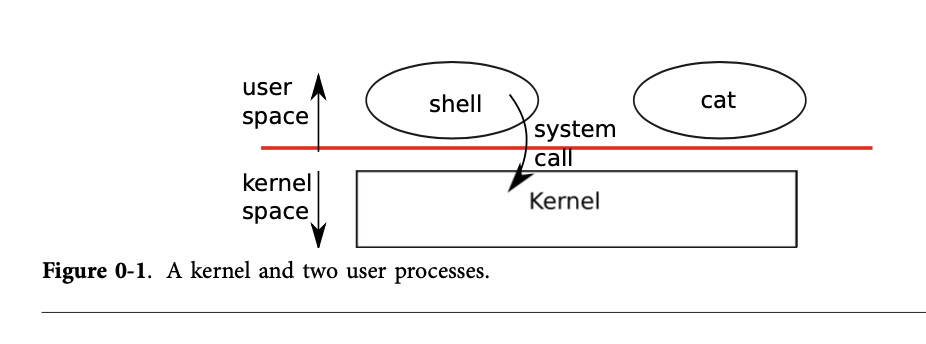
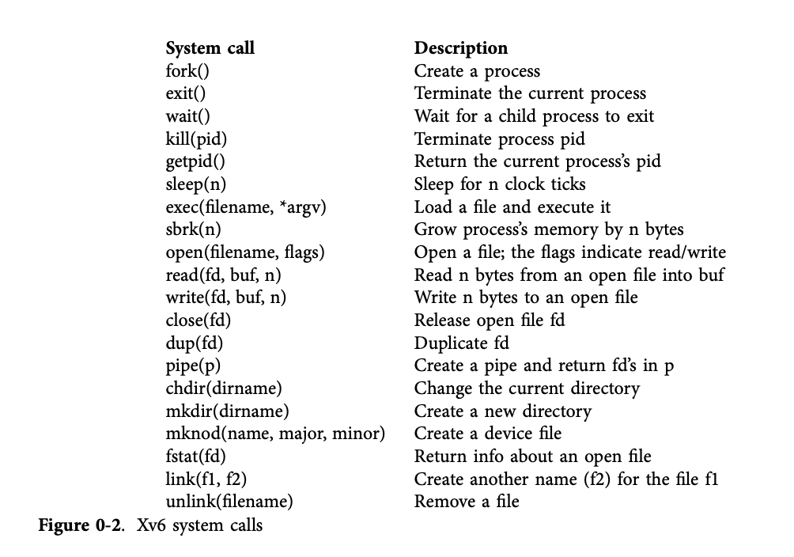

操作系统接口
The job of an operating system is to share a computer among multiple programs and to provide a more useful set of services than the hardware alone supports. The operating system manages and abstracts the low-level hardware, so that, for example, a word processor need not concern itself with which type of disk hardware is being used. It also shares the hardware among multiple programs so that they run (or ap- pear to run) at the same time. Finally, operating systems provide controlled ways for programs to interact, so that they can share data or work together.
操作系统的任务是在多个程序之间共享计算机资源，并提供比硬件本身支持的更广泛的服务。操作系统管理和抽象底层硬件，比如文字处理器并不需要关心正在使用哪种类型的磁盘硬件。 它还支持为多个程序提供共享硬件的能力，让程序并发运行（看起来同时在运行）。最后，操作系统为应用程序之间的交互提供了一种受控的方式，以便他们可以共享数据和协同工作。
An operating system provides services to user programs through an interface. Designing a good interface turns out to be difficult. On the one hand, we would like the interface to be simple and narrow because that makes it easier to get the imple- mentation right. On the other hand, we may be tempted to offer many sophisticated features to applications. The trick in resolving this tension is to design interfaces that rely on a few mechanisms that can be combined to provide much generality.
操作系统通过接口为用户程序提供服务。设计一个好的接口实际上是非常困难的。一方面，我们希望接口简单并且涉及的范围小一点， 这样可以使的接口实现更加容易正确的完成。另一方面，我们肯能会倾向于向应用程序提供许多复杂的功能。解决这种紧张关系的诀窍在于设计依赖于少数几种机制的接口，这些机制结合起来 可以提供更广泛的通用性。
This book uses a single operating system as a concrete example to illustrate oper- ating system concepts. That operating system, xv6, provides the basic interfaces introduced by Ken Thompson and Dennis Ritchie’s Unix operating system, as well as mim- icking Unix’s internal design. Unix provides a narrow interface whose mechanisms combine well, offering a surprising degree of generality. This interface has been so successful that modern operating systems—BSD, Linux, Mac OS X, Solaris, and even, to a lesser extent, Microsoft Windows—have Unix-like interfaces. Understanding xv6 is a good start toward understanding any of these systems and many others.
本书使用一个单一的操作系统作为具体的例子来说明操作系统的概念。这个操作系统，xv6，提供了由 Ken Thompson 和 Dennis Ritchie 设计 的 Unix 操作系统所引入的基本接口，并且模仿了 Unix 的内部设计。 Unix 操作系统设计的接口具有很高的通用性，接口设计非常成功，以至于现代的操作系统-包括 BSD, Linux, MacOSX, Solaris，甚至 在某种程度上微软的 Windows 都具有类似 Unix 的接口。所以，理解 xv6 是理解这些系统的良好开端。
As shown in Figure 0-1, xv6 takes the traditional form of a kernel, a special program that provides services to running programs. Each running program, called a process, has memory containing instructions, data, and a stack. The instructions implement the program’s computation. The data are the variables on which the computation acts. The stack organizes the program’s procedure calls.
如图0-1所示，xv6 采用了传统的内核实现形式，即一个为运行中的程序提供服务的特殊程序。每个运行中的程序被 称为一个进程，都有包含指令、数据和堆栈的内存。这些指令实现了程序的计算。数据是计算所依据的变量，堆栈组织程序的调用过程。

When a process needs to invoke a kernel service, it invokes a procedure call in the operating system interface. Such a procedure is called a system call. The system call enters the kernel; the kernel performs the service and returns. Thus a process alternates between executing in user space and kernel space.
当一个进程需要调用内核服务的时候，它会调用操作系统接口中的过程调用。这样的过程调用称为系统调用。系统调用进入内核态，内核 执行相应的服务并返回。因此，进程运行的过程中会在用户空间和内核空间交替执行。
The collection of system calls that a kernel provides is the interface that user programs see. The xv6 kernel provides a subset of the services and system calls that Unix kernels traditionally offer. Figure 0-2 lists all of xv6’s system calls.
内核提供的系统调用集合是用户程序看到的接口。xv6 内核提供了 Unix 内核传统提供服务和系统调用的子集。图 0-2 列出了 xv6 的所有系统调用。

The rest of this chapter outlines xv6’s services—processes, memory, file descriptors, pipes, and file systemand illustrates them with code snippets and discussions of how the shell, which is the primary user interface to traditional Unix-like systems, uses them. The shell’s use of system calls illustrates how carefully they have been designed.
本章的其余部分概述了 xv6 的服务-进程、内存、文件描述符、管道和文件系统-并用代码片段和关于 shell (传统类 Unix 系统主要用户界面) 如何使用它们的讨论来说明它们。shell 对系统调用的使用说明了它们是如何精心设计的。
The shell is an ordinary program that reads commands from the user and executes them. The fact that the shell is a user program, not part of the kernel, illustrates the power of the system call interface: there is nothing special about the shell. It also means that the shell is easy to replace; as a result, modern Unix systems have a variety of shells to choose from, each with its own user interface and scripting features. The xv6 shell is a simple implementation of the essence of the Unix Bourne shell. Its implementation can be found at line (8550).
shell 是一个普通的程序，它从用户那里读取命令并执行它们。shell 是一个用户程序，而不是内核的一部分，这 一事实说明了系统调用接口的强大功能：shell 没有什么特别之处。这也意味着 shell 容易更换。因此，现代 Unix 系统有多种 shell 可供选择，每种 shell 都有自己的用户界面和脚本功能。xv6 shell 是 Unix Bourne shell 本质的简单实现。它的实现可以在 8550 行找到。
Processes and memory - 进程和内存
An xv6 process consists of user-space memory (instructions, data, and stack) and per-process state private to the kernel. Xv6 can time-share processes: it transparently switches the available CPUs among the set of processes waiting to execute. When a process is not executing, xv6 saves its CPU registers, restoring them when it next runs the process. The kernel associates a process identifier, or pid, with each process.
xv6 进程由用户空间内存（指令、数据和堆栈）和内核专用的每个进程的状态组成。Xv6 可以分时处理进程：它在等待执行的一组进程之间透明地切换可用 的 CPU 。当一个进程未执行时，vx6 会保存它的 CPU 寄存器，并在下次运行该进程的时候恢复它们。内核将进程标识符（pid）与每个进程相关联。
A process may create a new process using the fork system call. Fork creates a new process, called the child process, with exactly the same memory contents as the calling process, called the parent process. Fork returns in both the parent and the child. In the parent, fork returns the child’s pid; in the child, it returns zero. For example, consider the following program fragment:
进程可以使用 fork 系统调用创建新进程。fork 创建了一个新进程，称为子进程，其内存内容和调用进程（父进程）完全相同。 fork 在父节点和子节点中都反悔，在父节点中，fork 返回孩子节点的 pid。在子进程中，它返回 0。下面的代码片段展示了 进程创建的过程：
int pid = fork();
if(pid > 0){
printf("parent: child=%d\n", pid);
pid = wait();
printf("child %d is done\n", pid);
} else if(pid == 0){
printf("child: exiting\n");
exit();
} else {
printf("fork error\n");
}
The exit system call causes the calling process to stop executing and to release resources such as memory and open files. The wait system call returns the pid of an exited child of the current process; if none of the caller’s children has exited, wait waits for one to do so. In the example, the output lines
退出系统调用导致调用进程停止执行，并释放内存和打开的文件等资源。wait 系统调用等待返回当前进程退出的子进程的 pid。 如果没有一个子进程退出，wait 会等到其中一个退出，上述程序运行将输出：
parent: child=1234 child: exiting
might come out in either order, depending on whether the parent or child gets to its printf call first. After the child exits the parent’s wait returns, causing the parent to print.
这两行输出可能顺序不同，这个取决于是父进程还是子进程先调用 printf. 子进程退出后，父进程等待返回，等待子进程执行完之后， 父进程打印：
parent: child 1234 is done
Although the child has the same memory contents as the parent initially, the parent and child are executing with different memory and different registers: changing a variable in one does not affect the other. For example, when the return value of wait is stored into pid in the parent process, it doesn’t change the variable pid in the child. The value of pid in the child will still be zero.
虽然一开始子进程和父进程有着相同的内存空间，但是父进程和子进程是运行在不同的内存和寄存器上的。 改变父进程或者是子进程中的变量，并不会导致相互影响。例如之前的例子中，当 wait 调用的返回值 存储在父进程的 pid 中时，它不会改变子进程中的变量 pid。子进程中 pid 的值仍然为 0。
The exec system call replaces the calling process’s memory with a new memory image loaded from a file stored in the file system. The file must have a particular format, which specifies which part of the file holds instructions, which part is data, at which instruction to start, etc. xv6 uses the ELF format, which Chapter 2 discusses in more detail. When exec succeeds, it does not return to the calling program; instead, the instructions loaded from the file start executing at the entry point declared in the ELF header. Exec takes two arguments: the name of the file containing the executable and an array of string arguments. For example:
char *argv[3];
argv[0] = "echo";
argv[1] = "hello";
argv[2] = 0;
exec("/bin/echo", argv);
printf("exec error\n");
This fragment replaces the calling program with an instance of the program /bin/echo
running with the argument list echo hello. Most programs ignore the first argument,
which is conventionally the name of the program.
exec 系统调用将进程的内存替换为从文件系统中存储的可执行文件加载成新的内存镜像。这个文件必须具有特定的格式， 格式中说明了哪个部分包含指令、哪个部分是数据、从哪个指令开始执行等信息。xv6 使用了 ELF 格式，我们会在后续第二章 介绍细节。 当 exec 执行成功时，它不会返回调用程序；相反，会从文件加载的指令在 ELF 头中生命的入口开始执行。Exec 接受两个参数：包含可执行文件的文件名和字符串参数数组。例如:
char *argv[3];
argv[0] = "echo";
argv[1] = "hello";
argv[2] = 0;
exec("/bin/echo", argv);
printf("exec error\n");
这个片段将调用程序替换为运行参数列表 echo hello 的 /bin/echo 程序实例。通常程序会忽略第一个参数，它是程序的名称。
The xv6 shell uses the above calls to run programs on behalf of users. The main structure of the shell is simple; see main (8701). The main loop reads a line of input from the user with getcmd. Then it calls fork, which creates a copy of the shell pro- cess. The parent calls wait, while the child runs the command. For example, if the user had typed ‘‘echo hello’’ to the shell, runcmd would have been called with ‘‘echo hello’’ as the argument. runcmd (8606) runs the actual command. For ‘‘echo hello’’, it would call exec (8626). If exec succeeds then the child will execute instructions from echo instead of runcmd. At some point echo will call exit, which will cause the parent to return from wait in main (8701). You might wonder why fork and exec are not combined in a single call; we will see later that separate calls for creating a process and loading a program is a clever design.
xv6 的 shell 使用上述的调用来运行用户的程序。shell 的主要结构很简单，可以看到 xv6 中 main 的实现，
int
main(void)
{
static char buf[100];
int fd;
// Ensure that three file descriptors are open.
while((fd = open("console", O_RDWR)) >= 0){
if(fd >= 3){
close(fd);
break;
}
}
// Read and run input commands.
while(getcmd(buf, sizeof(buf)) >= 0){
if(buf[0] == 'c' && buf[1] == 'd' && buf[2] == ' '){
// Chdir must be called by the parent, not the child.
buf[strlen(buf)-1] = 0; // chop \n
if(chdir(buf+3) < 0)
printf(2, "cannot cd %s\n", buf+3);
continue;
}
if(fork1() == 0)
runcmd(parsecmd(buf));
wait();
}
exit();
}
主循环通过 getcmd 从用户的输入中读入命令，然后调用 fork 创建一个 shell 进程的拷贝。
父进程调用 wait ，等待子进程执行命令。例如，如果用户给系统输入了 “echo hello” 的指令，
runcmd 会将会将 echo hello最为参数， runcmd 执行实际的命令。对于 "echo hello"，它
将调用 exec。如果 exec 调用成功，那么子进程将执行 echo 程序的指令。当子进程运行完调用 exit，将会
导致父进程从 wait 调用等待返回。你可能会想为什么 fork 和 exec 调用没有组合在一个调用里面。
稍后我们将看到将创建进程和加载进程分离开是一个聪明的设计。
Xv6 allocates most user-space memory implicitly: fork allocates the memory required for the child’s copy of the parent’s memory, and exec allocates enough memory to hold the executable file. A process that needs more memory at run-time (perhaps for malloc) can call sbrk(n) to grow its data memory by n bytes; sbrk returns the location of the new memory.
xv6 隐示的分配了大部分用户内存：fork 调用申请了父进程拷贝生成子进程的所需的内存，并且 exec 申请了足够的内存来运行可执行文件。运行时的进程如果需要更多的内存，何用调用 sbrk(n) 来增加 n 字节的内存空间；sbrk 返回新内存的地址。
Xv6 does not provide a notion of users or of protecting one user from another; in Unix terms, all xv6 processes run as root.
xv6 并不提供用户管理的的能力，不保证一个用户运行的进程不会被另一个用户影响，用 unix 术语来说，所有xv6进程都是root身份运行的。
I/O and File descriptors
A file descriptor is a small integer representing a kernel-managed object that a process may read from or write to. A process may obtain a file descriptor by opening a file, directory, or device, or by creating a pipe, or by duplicating an existing descriptor. For simplicity we’ll often refer to the object a file descriptor refers to as a ‘‘file’’; the file descriptor interface abstracts away the differences between files, pipes, and de- vices, making them all look like streams of bytes.
文件描述符是一个小的整数，它表示内核管理的一个对象，进程可以从它读取或者写入。一个进程可以通过 大家文件、目录，或者外部设备，或者创建管道、复制现有文件描述符的手段来获取新的文件描述符。 为了简单起见，我们通常将文件描述符所指的对象称为文件，文件描述符接口抽象了文件、管道和设备之间的 差异，使它们看起来都想字节流。
Internally, the xv6 kernel uses the file descriptor as an index into a perprocess table, so that every process has a private space of file descriptors starting at zero. By convention, a process reads from file descriptor 0 (standard input), writes output to file descriptor 1 (standard output), and writes error messages to file descriptor 2 (standard error). As we will see, the shell exploits the convention to implement I/O redirection and pipelines. The shell ensures that it always has three file descriptors open (8707), which are by default file descriptors for the console.
在内部，xv6 内核使用文件描述符作为每个进程表的索引，所以每个进程都有一个从 0 开始的文件描述符的私有空间。按照惯例， 进程从文件描述符 0 （标准输入）读取，将输出写入到文件描述符 1（标准输出），并将错误消息写入文件描述符2（标准错误）。 正如我们将看到，shell 利用这个约定实现 I/O重定向和管道。shell 确保它始终有三个打开的文件描述符，这些描述符都是为了 操作控制台的默认描述符。
The read and write system calls read bytes from and write bytes to open files named by file descriptors. The call read(fd, buf, n) reads at most n bytes from the file descriptor fd, copies them into buf, and returns the number of bytes read. Each file descriptor that refers to a file has an offset associated with it. Read reads data from the current file offset and then advances that offset by the number of bytes read: a subsequent read will return the bytes following the ones returned by the first read. When there are no more bytes to read, read returns zero to signal the end of the file.
read 和 write 的系统调用通过文件描述符从打开的文件中读取和写入数据。调用 read(fd, buf, n)从文件描符符 fd 中读取 n 个 字节的数据，并将它们拷贝到 buf，并且返回读取到字节数量。引用文件的每一个描述符都有一个偏移量与它关联，Read 从当前偏移量 读取数据，然后将偏移量增加读取的字节数：后续将读取之后的字节，当文件没有更多的字节可以读取的时候，read 返回 0 表示整个文件读取结束。
The call write(fd, buf, n) writes n bytes from buf to the file descriptor fd and returns the number of bytes written. Fewer than n bytes are written only when an error occurs. Like read, write writes data at the current file offset and then advances that offset by the number of bytes written: each write picks up where the previous one left off.
调用write（fd，buf，n）将n个字节从buf写入文件描述符fd，并返回写入的字节数。 只有当发生错误时，才会写入少于n个字节。与读取一样，写入以当前文件偏移量写入数据， 然后按写入的字节数推进该偏移量：每次写入都会从上一次写入停止的地方开始。
The following program fragment (which forms the essence of cat) copies data from its standard input to its standard output. If an error occurs, it writes a message to the standard error.
char buf[512];
int n;
for(;;){
n = read(0, buf, sizeof buf);
if(n == 0)
break;
if(n < 0){
fprintf(2, "read error\n");
exit(); }
if(write(1, buf, n) != n){
fprintf(2, "write error\n");
exit();
}
}
以下程序片段（cat 命令实现的本质）将数据从其标准输入复制到其标准输出。如果发生错误，它会向标准错误写入一条消息。
The important thing to note in the code fragment is that cat doesn’t know whether it is reading from a file, console, or a pipe. Similarly cat doesn’t know whether it is printing to a console, a file, or whatever. The use of file descriptors and the convention that file descriptor 0 is input and file descriptor 1 is output allows a simple implementation of cat.
在代码片段中需要注意的重要一点是，cat不知道它是从文件、控制台还是管道读取的。同样，cat 也不知道它是在打印 到控制台、文件还是其他什么。文件描述符的使用以及输入文件描述符0并输出文件描述符1的约定允许cat的简单实现。
The close system call releases a file descriptor, making it free for reuse by a future open, pipe, or dup system call (see below). A newly allocated file descriptor is always the lowest-numbered unused descriptor of the current process.
close 系统调用用来释放一个文件描述符，使其可以供未来的open、pipe 或者 dup 系统调用重用。新分配的文件描述符始终是当前 进程中编号最低的未使用的描述符。
File descriptors and fork interact to make I/O redirection easy to implement. Fork copies the parent’s file descriptor table along with its memory, so that the child starts with exactly the same open files as the parent. The system call exec replaces the calling process’s memory but preserves its file table. This behavior allows the shell to implement I/O redirection by forking, reopening chosen file descriptors, and then exec- ing the new program. Here is a simplified version of the code a shell runs for the command cat < input.txt:
文件描述符和 fork 一起使得I/O重定向容易实现。Fork复制父进程的文件描述符表及其内存， 以便子进程以与父进程开始打开完全相同文件。系统调用exec替换调用进程的内存，但保留其文件表。 此行为允许shell通过 fork、重新打开所选文件描述符，然后执行新程序来实现I/O重定向。 以下是shell为命令cat＜input.txt运行的代码的简化版本：
char *argv[2];
argv[0] = "cat";
argv[1] = 0;
if(fork() == 0) {
close(0);
open("input.txt", O_RDONLY);
exec("cat", argv);
}
After the child closes file descriptor 0, open is guaranteed to use that file descriptor for the newly opened input.txt: 0 will be the smallest available file descriptor. Cat then executes with file descriptor 0 (standard input) referring to input.txt.
在子进程关闭文件描述符 0 后，open 将保证该文件用于新打开的 input.txt：0将是最小的可用文件描述符。然后 ，cat使用引用 input.txt 的文件描述符 0（标准输入）执行。